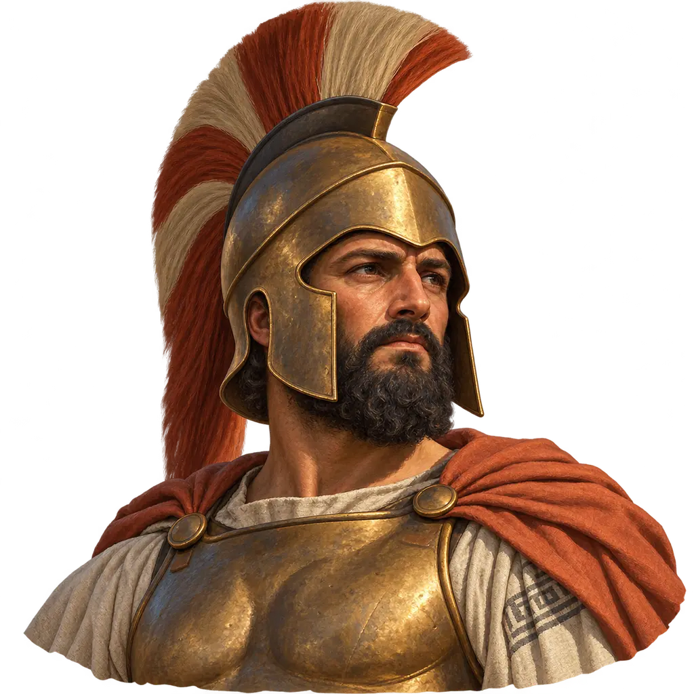
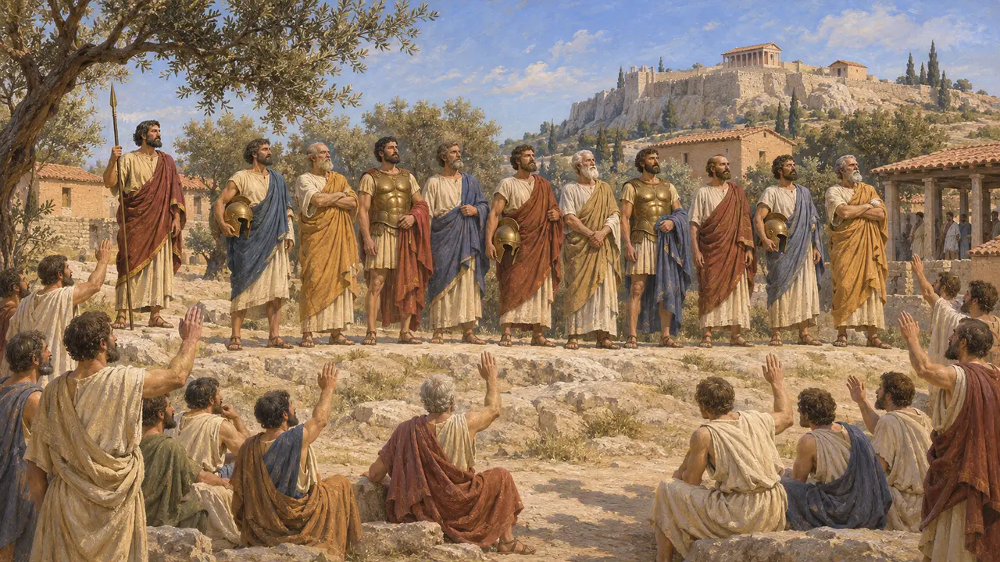
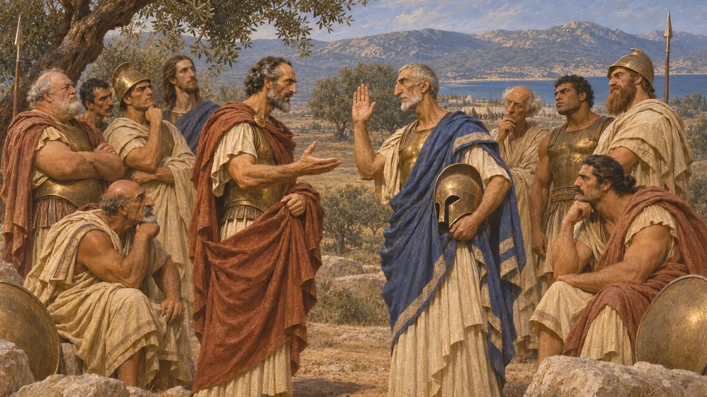
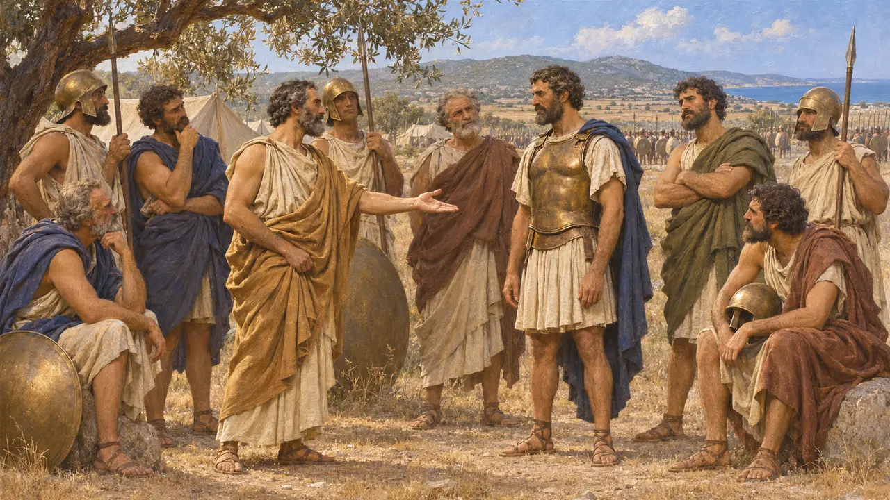
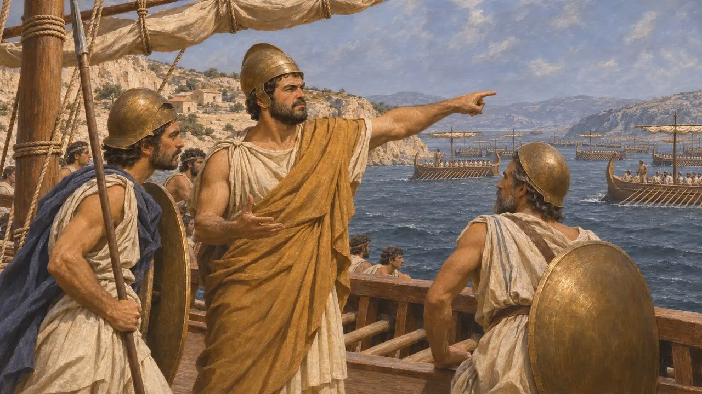
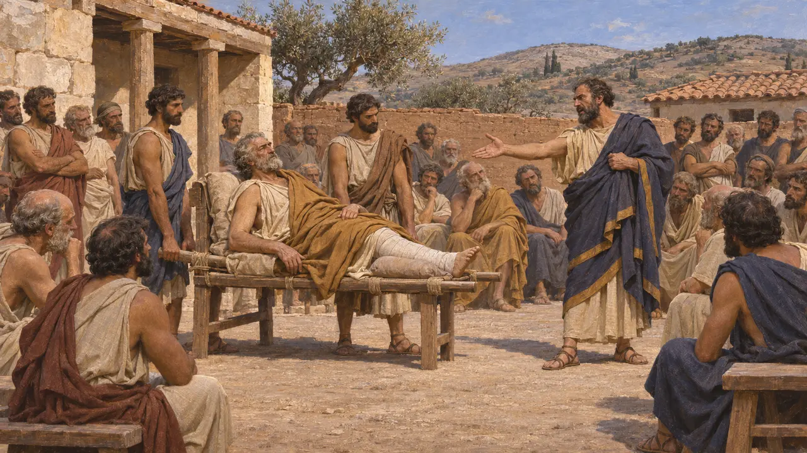

스트라테고이
기원전 501년경부터 이어진 아테네의 선출직 10인 장군단
스트라테고이는 아테네의 열 장군으로, 해마다 시민들이 선출했으며 처음에는 클레이스테네스가 만든 열 개 부족에서 한 명씩 뽑혔다. 기원전 490년 마라톤에서 이들은 폴레마르코스 칼리마코스와 지휘권을 나누어 다티스와 아르타프레네스의 군대에 맞섰다. 기원전 487년 이후 아르콘이 추첨으로 선출되기 시작하면서, 장군직은 테미스토클레스, 아리스테이데스, 크산티포스 같은 인물들에게 으뜸가는 관직이 되었을 것이다.
게임에서: 게임은 스트라테고이를 아테네의 열 장군으로 보여 주며, 그중 밀티아데스를 특별히 부각한다. 실제로 490년의 지휘권은 폴레마르코스 칼리마코스와 공유되었고, 전투를 결정짓는 표를 던진 것도 그였다.

부족마다 한 명씩, 열 명으로 이루어진 위원회
고대의 전승클레이스테네스는 기원전 508년경 아테네 시민을 열 개의 새 부족으로 재편했다. 기원전 320년대에 아리스토텔레스 학파에서 쓰인 『아테네 정체』는 부족마다 한 명씩 장군을 선출하는 제도가 기원전 501년경에 시작되었다고 하며, 그때에도 전군을 이끈 것은 여전히 폴레마르코스였다고 전한다. 또한 이 책이 쓰인 당대에는 장군을 제비뽑기가 아니라 거수로 선출했고, 거듭해서 연임할 수 있었다고 기록한다.
Aristotle, Athenaion Politeia 22.2; 61.1; 62.3

마라톤의 열 장군
고대의 전승헤로도토스에 따르면 마라톤의 아테네인은 밀티아데스를 포함한 열 명의 장군이 이끌었다. 밀티아데스는 트라키아 케르소네소스를 다스리다가 페르시아의 페니키아 함대가 쳐들어오자 도망쳤다. 아테네에서 그는 케르소네소스에서의 참주 행위로 재판을 받았으나 무죄 판결을 받았고, 이후 장군으로 선출되었다. 싸울지 여부를 두고 장군들의 의견이 다섯 대 다섯으로 갈리자, 밀티아데스는 폴레마르코스 칼리마코스를 설득해 전투 쪽에 결정표를 던지게 했다.
Herodotus 6.103-110

마라톤의 진짜 지휘관은 누구였는가
분쟁 중헤로도토스에 따르면 장군단의 의장직은 날마다 장군들 사이에서 돌아가며 맡았다. 그의 기록에서 전투를 지지한 장군들은 자기 차례를 밀티아데스에게 넘겼지만, 밀티아데스는 공격에 앞서 자기 본래 차례가 올 때까지 기다렸다. 플루타르코스는 아리스테이데스가 가장 먼저 자기 차례를 양보했다고 전한다. 이 순번제를 믿을 수 있는지, 실제 지휘권은 누구에게 있었는지를 두고 역사가들의 의견은 엇갈린다. 헤로도토스가 밀티아데스를 부각한 것은 그의 아들 키몬 집안에 전해진 전승을 반영한 것일 수도 있다.
Herodotus 6.110; Plutarch, Aristides 5; P. Krentz, The Battle of Marathon, 2010

아르콘을 추첨으로 뽑게 된 뒤
고대의 전승『아테나이온 폴리테이아』는 기원전 487년부터 아르콘을 후보자 명단에서 추첨으로 뽑았다고 전한다. 역사가들은 대개 이 무렵부터 야심 있는 이들이 선거로 뽑는 장군직으로 눈을 돌렸다고 결론짓는다. 테미스토클레스는 기원전 480년 살라미스에서 아테네 함선들을 이끌었다. 479년에는 크산티포스가 그리스 함대의 아테네 함선들을 지휘했고, 아리스테이데스는 플라타이아에서 아테네 호플리테스를 이끌었다.
Aristotle, Athenaion Politeia 22.5; Herodotus 8.131; Herodotus 9.28

민중에게 책임을 지는
고대의 전승장군들은 시민들 앞에서 기소될 수 있었다. 헤로도토스에 따르면 밀티아데스는 마라톤 직후 함선 70척을 이끌고 파로스를 공격했으나 함락하지 못했다. 그러자 크산티포스가 그를 아테네인을 기만한 죄로 고발했다. 다리 부상으로 들것에 실려 법정에 나온 밀티아데스는 50탈란트의 벌금형을 받았고, 그 상처로 죽었다. 벌금은 아들 키몬이 갚았다.
Herodotus 6.132-136
출처
- Herodotus 6.103-136
- Aristotle, Athenaion Politeia 22
- Plutarch, Aristides
- C. Hignett, A History of the Athenian Constitution, 1952
- D. Hamel, Athenian Generals: Military Authority in the Classical Period, 1998
- P. Krentz, The Battle of Marathon, 2010